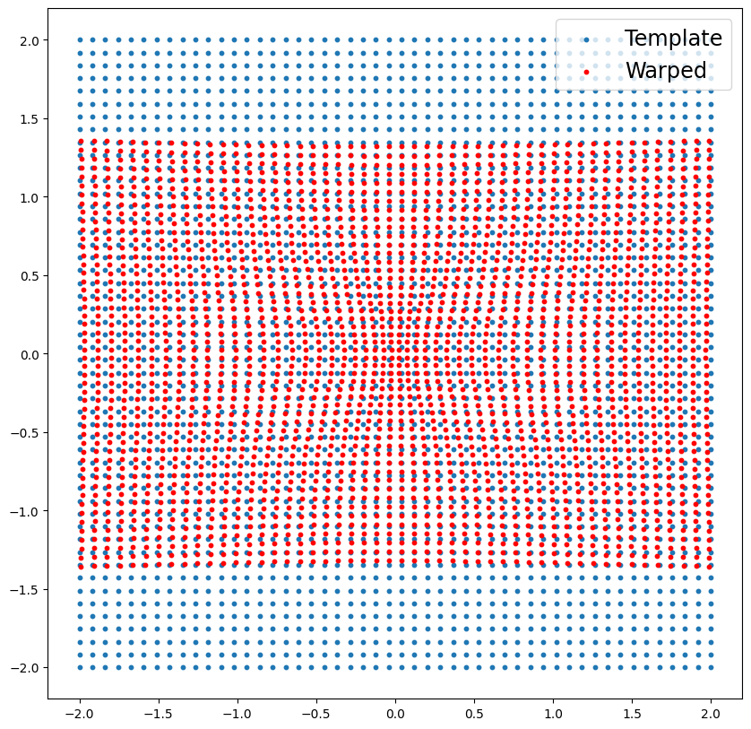
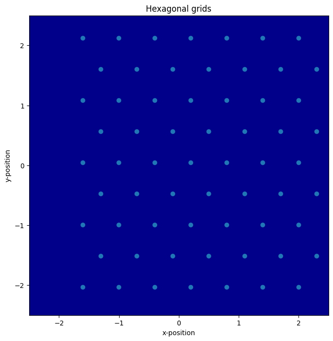
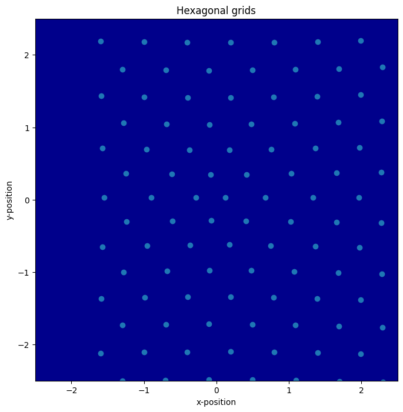

Notebook source code: notebooks/08_applications_synthetic_grid_cells.ipynb
Analyze Synthetic Grid Cells: Warping#
Imports & setup#
In [2]:
import setup
setup.main()
import os
os.environ["GEOMSTATS_BACKEND"] = "pytorch"
import geomstats.backend as gs
import matplotlib.pyplot as plt
import numpy as np
from geomstats.geometry.pullback_metric import PullbackMetric
from neurometry.curvature.viz import plot_grid_rate_maps, plot_grids
import neurometry.curvature.datasets.gridcells as gridcells
%load_ext autoreload
%autoreload 2
%matplotlib inline
Working directory: /Users/facosta/Desktop/code/neurometry/neurometry
Directory added to path: /Users/facosta/Desktop/code/neurometry
Directory added to path: /Users/facosta/Desktop/code/neurometry/neurometry
Define diffeomorphism \(\varphi: \mathbb{R}^2 \to \mathbb{R}^2\)#
\((x,y) \mapsto ((1 + \frac{\gamma}{(1 + x^2 + y^2)^{\alpha}})x, (1 + \frac{\gamma}{(1 + x^2 + y^2)^{\beta}})y)\)
\(\gamma \in \mathbb{R}, \alpha, \beta \in \mathbb{R}_{+}\) parameterize the deformation
In [3]:
def get_plane_warp(alpha, beta, gamma):
def plane_warp(point):
x = point[0]
y = point[1]
f_x = (1 + gamma / (1 + x**2 + y**2) ** alpha) * x
f_y = (1 + gamma / (1 + x**2 + y**2) ** beta) * y
return gs.array([f_x, f_y])
return plane_warp
In [ ]:
# TODO: define inverse diffop
Instantiate + plot warp#
In [4]:
warp = get_plane_warp(alpha=2, beta=0.1, gamma=-0.4)
In [5]:
x = gs.linspace(-2, 2, 50)
y = gs.linspace(-2, 2, 50)
x_grid, y_grid = gs.meshgrid(x, y)
x_grid_warp, y_grid_warp = warp((x_grid, y_grid))
fig = plt.figure(figsize=(10, 10))
ax = fig.add_subplot(111)
ax.scatter(x_grid, y_grid, s=10, label="Template")
ax.scatter(x_grid_warp, y_grid_warp, s=10, label="Warped", c="red")
ax.legend(fontsize="xx-large");

Compute pull-back metric \((\varphi^*g)_{ij} = \partial_{i}\varphi^{a}\partial_{j}\varphi^{b}g_{ab}\)#
In [9]:
# from geomstats.geometry.euclidean import Euclidean
# from geomstats.geometry.pullback_metric import PullbackDiffeoMetric
# class NeuralPullbackDiffeoMetric(PullbackDiffeoMetric):
# def __init__(self):
# super().__init__(space=Euclidean(dim=2))
# def _define_embedding_space(self):
# return Euclidean(dim=2)
# def diffeormorphism(self, base_point):
# return warp(base_point)
# def inverse_diffeormorphism(self, base_point):
# return warp(base_point)
# pullback_diffeo_metric = NeuralPullbackDiffeoMetric()
Quick distance check#
In [33]:
point_a = gs.array([0.0, 0.0])
point_b = gs.array([1.0, 1.0])
pullback_metric.dist(point_a, point_b)
Out [33]:
tensor(0.5221)
Quick metric matrix check#
In [34]:
pullback_metric.metric_matrix(point_a)
Out [34]:
tensor([[0.2500, 0.0000],
[0.0000, 0.2500]])
Plot volume element \(\sqrt{|\text{det}(g)|}\)#
In [45]:
# Combine and reshape the x and y coordinates into a list of 2D points
points = gs.vstack((x_grid.ravel(), y_grid.ravel())).T
# Define your function
def volume_element(x, y):
point = gs.array([x, y])
g = pullback_metric.metric_matrix(point)
return gs.sqrt(gs.abs(gs.linalg.det(g)))
# Apply the function to each point in the list
values = gs.array([volume_element(x, y) for x, y in points])
# Reshape the values back into a 2D grid
z_values = values.reshape(x_grid.shape)
# Create the heatmap
plt.imshow(
z_values, origin="lower", extent=[x.min(), x.max(), y.min(), y.max()], cmap="RdPu"
)
plt.colorbar(label="Function Value")
plt.xlabel("X")
plt.ylabel("Y")
plt.title("Heatmap of volume element at (x, y)")
plt.show()

Synthetic grid cell deformations#
Grid cell parameters#
In [27]:
warp = get_plane_warp(alpha=2, beta=0.1, gamma=-0.4)
grid_scale = 0.6
arena_dims = np.array([4, 4])
n_cells = 1
grid_orientation_mean = 0
grid_orientation_std = 0
field_width = 0.01
resolution = 50
lx = grid_scale
ly = grid_scale * np.sqrt(3) / 2
Create grid + deformed grid#
In [28]:
grids, grids_warped = gridcells.generate_all_grids(
grid_scale,
arena_dims,
n_cells,
grid_orientation_mean,
grid_orientation_std,
warp=warp,
lattice_type="hexagonal",
)
plot_grids(grids, arena_dims)
plot_grids(grids_warped, arena_dims)


In [29]:
rate_maps = gridcells.create_rate_maps(grids, field_width, arena_dims, resolution)
plot_grid_rate_maps(rate_maps)

In [30]:
rate_maps_warped = gridcells.create_rate_maps(
grids_warped, field_width, arena_dims, resolution
)
plot_grid_rate_maps(rate_maps_warped)

Apply LDDMM algorithm to grid cell maps#
In [16]:
import pyLDDMM
from pyLDDMM.utils.visualization import plot_warpgrid
In [17]:
i0 = rate_maps[0]
i1 = rate_maps_warped[0]
In [18]:
lddmm = pyLDDMM.LDDMM2D()
im, v, energies, length, Phi0, Phi1, J0, J1 = lddmm.register(
i0, i1, sigma=0.1, alpha=1, epsilon=0.0001, K=500
)
iteration 0, energy 7356.55, thereof 0.00 regularization and 7356.55 intensity difference
iteration 1, energy 6838.51, thereof 3.54 regularization and 6834.97 intensity difference
iteration 2, energy 6367.28, thereof 6.96 regularization and 6360.32 intensity difference
iteration 3, energy 5938.25, thereof 10.25 regularization and 5928.00 intensity difference
iteration 4, energy 5547.29, thereof 13.42 regularization and 5533.88 intensity difference
iteration 5, energy 5190.54, thereof 16.47 regularization and 5174.07 intensity difference
iteration 6, energy 4861.58, thereof 19.41 regularization and 4842.16 intensity difference
iteration 7, energy 4557.26, thereof 22.25 regularization and 4535.01 intensity difference
iteration 8, energy 4275.87, thereof 24.97 regularization and 4250.89 intensity difference
iteration 9, energy 4016.48, thereof 27.59 regularization and 3988.88 intensity difference
iteration 10, energy 3778.18, thereof 30.12 regularization and 3748.06 intensity difference
iteration 11, energy 3557.51, thereof 32.54 regularization and 3524.97 intensity difference
iteration 12, energy 3354.38, thereof 34.87 regularization and 3319.52 intensity difference
iteration 13, energy 3166.99, thereof 37.10 regularization and 3129.88 intensity difference
iteration 14, energy 2993.88, thereof 39.25 regularization and 2954.63 intensity difference
iteration 15, energy 2834.33, thereof 41.31 regularization and 2793.01 intensity difference
iteration 16, energy 2686.97, thereof 43.29 regularization and 2643.68 intensity difference
iteration 17, energy 2551.61, thereof 45.19 regularization and 2506.43 intensity difference
iteration 18, energy 2427.08, thereof 47.01 regularization and 2380.08 intensity difference
iteration 19, energy 2310.40, thereof 48.75 regularization and 2261.65 intensity difference
iteration 20, energy 2203.97, thereof 50.43 regularization and 2153.54 intensity difference
iteration 21, energy 2105.18, thereof 52.03 regularization and 2053.15 intensity difference
iteration 22, energy 2013.10, thereof 53.58 regularization and 1959.53 intensity difference
iteration 23, energy 1927.95, thereof 55.05 regularization and 1872.90 intensity difference
iteration 24, energy 1848.93, thereof 56.47 regularization and 1792.46 intensity difference
iteration 25, energy 1775.58, thereof 57.83 regularization and 1717.75 intensity difference
iteration 26, energy 1707.29, thereof 59.14 regularization and 1648.15 intensity difference
iteration 27, energy 1643.74, thereof 60.39 regularization and 1583.35 intensity difference
iteration 28, energy 1584.68, thereof 61.59 regularization and 1523.09 intensity difference
iteration 29, energy 1528.41, thereof 62.75 regularization and 1465.67 intensity difference
iteration 30, energy 1477.33, thereof 63.85 regularization and 1413.48 intensity difference
iteration 31, energy 1429.57, thereof 64.91 regularization and 1364.66 intensity difference
iteration 32, energy 1384.94, thereof 65.94 regularization and 1319.01 intensity difference
iteration 33, energy 1343.24, thereof 66.92 regularization and 1276.33 intensity difference
iteration 34, energy 1304.30, thereof 67.86 regularization and 1236.44 intensity difference
iteration 35, energy 1267.90, thereof 68.77 regularization and 1199.14 intensity difference
iteration 36, energy 1233.93, thereof 69.64 regularization and 1164.30 intensity difference
iteration 37, energy 1202.25, thereof 70.48 regularization and 1131.77 intensity difference
iteration 38, energy 1172.59, thereof 71.28 regularization and 1101.31 intensity difference
iteration 39, energy 1143.91, thereof 72.06 regularization and 1071.85 intensity difference
iteration 40, energy 1117.90, thereof 72.80 regularization and 1045.10 intensity difference
iteration 41, energy 1093.47, thereof 73.52 regularization and 1019.94 intensity difference
iteration 42, energy 1070.51, thereof 74.21 regularization and 996.30 intensity difference
iteration 43, energy 1048.90, thereof 74.88 regularization and 974.02 intensity difference
iteration 44, energy 1028.46, thereof 75.52 regularization and 952.94 intensity difference
iteration 45, energy 1008.95, thereof 76.14 regularization and 932.81 intensity difference
iteration 46, energy 990.48, thereof 76.74 regularization and 913.73 intensity difference
iteration 47, energy 972.90, thereof 77.32 regularization and 895.58 intensity difference
iteration 48, energy 956.22, thereof 77.88 regularization and 878.34 intensity difference
iteration 49, energy 939.71, thereof 78.42 regularization and 861.29 intensity difference
iteration 50, energy 924.59, thereof 78.93 regularization and 845.66 intensity difference
iteration 51, energy 910.17, thereof 79.44 regularization and 830.73 intensity difference
iteration 52, energy 896.42, thereof 79.92 regularization and 816.50 intensity difference
iteration 53, energy 883.32, thereof 80.39 regularization and 802.92 intensity difference
iteration 54, energy 870.80, thereof 80.85 regularization and 789.95 intensity difference
iteration 55, energy 858.82, thereof 81.29 regularization and 777.53 intensity difference
iteration 56, energy 847.28, thereof 81.71 regularization and 765.57 intensity difference
iteration 57, energy 836.12, thereof 82.13 regularization and 754.00 intensity difference
iteration 58, energy 825.39, thereof 82.53 regularization and 742.86 intensity difference
iteration 59, energy 814.52, thereof 82.92 regularization and 731.60 intensity difference
iteration 60, energy 804.57, thereof 83.30 regularization and 721.27 intensity difference
iteration 61, energy 794.98, thereof 83.66 regularization and 711.32 intensity difference
iteration 62, energy 785.74, thereof 84.02 regularization and 701.72 intensity difference
iteration 63, energy 776.83, thereof 84.36 regularization and 692.47 intensity difference
iteration 64, energy 768.26, thereof 84.70 regularization and 683.56 intensity difference
iteration 65, energy 759.98, thereof 85.02 regularization and 674.95 intensity difference
iteration 66, energy 751.99, thereof 85.34 regularization and 666.65 intensity difference
iteration 67, energy 744.29, thereof 85.65 regularization and 658.64 intensity difference
iteration 68, energy 736.85, thereof 85.95 regularization and 650.89 intensity difference
iteration 69, energy 729.23, thereof 86.25 regularization and 642.98 intensity difference
iteration 70, energy 722.19, thereof 86.53 regularization and 635.66 intensity difference
iteration 71, energy 715.36, thereof 86.81 regularization and 628.55 intensity difference
iteration 72, energy 708.69, thereof 87.08 regularization and 621.61 intensity difference
iteration 73, energy 702.22, thereof 87.35 regularization and 614.87 intensity difference
iteration 74, energy 695.94, thereof 87.61 regularization and 608.33 intensity difference
iteration 75, energy 689.85, thereof 87.86 regularization and 601.99 intensity difference
iteration 76, energy 683.94, thereof 88.11 regularization and 595.83 intensity difference
iteration 77, energy 678.18, thereof 88.35 regularization and 589.83 intensity difference
iteration 78, energy 672.57, thereof 88.59 regularization and 583.98 intensity difference
iteration 79, energy 666.77, thereof 88.82 regularization and 577.95 intensity difference
iteration 80, energy 661.42, thereof 89.04 regularization and 572.38 intensity difference
iteration 81, energy 656.20, thereof 89.27 regularization and 566.93 intensity difference
iteration 82, energy 651.10, thereof 89.48 regularization and 561.62 intensity difference
iteration 83, energy 646.13, thereof 89.69 regularization and 556.44 intensity difference
iteration 84, energy 641.29, thereof 89.90 regularization and 551.38 intensity difference
iteration 85, energy 636.55, thereof 90.11 regularization and 546.45 intensity difference
iteration 86, energy 631.93, thereof 90.31 regularization and 541.62 intensity difference
iteration 87, energy 627.40, thereof 90.51 regularization and 536.90 intensity difference
iteration 88, energy 622.98, thereof 90.70 regularization and 532.28 intensity difference
iteration 89, energy 618.36, thereof 90.89 regularization and 527.47 intensity difference
iteration 90, energy 614.12, thereof 91.08 regularization and 523.04 intensity difference
iteration 91, energy 609.96, thereof 91.26 regularization and 518.70 intensity difference
iteration 92, energy 605.89, thereof 91.44 regularization and 514.45 intensity difference
iteration 93, energy 601.89, thereof 91.62 regularization and 510.27 intensity difference
iteration 94, energy 597.97, thereof 91.79 regularization and 506.18 intensity difference
iteration 95, energy 594.14, thereof 91.96 regularization and 502.18 intensity difference
iteration 96, energy 590.39, thereof 92.13 regularization and 498.26 intensity difference
iteration 97, energy 586.71, thereof 92.30 regularization and 494.41 intensity difference
iteration 98, energy 583.10, thereof 92.46 regularization and 490.64 intensity difference
iteration 99, energy 579.30, thereof 92.62 regularization and 486.68 intensity difference
iteration 100, energy 575.84, thereof 92.78 regularization and 483.06 intensity difference
iteration 101, energy 572.44, thereof 92.94 regularization and 479.50 intensity difference
iteration 102, energy 569.09, thereof 93.09 regularization and 476.00 intensity difference
iteration 103, energy 565.81, thereof 93.24 regularization and 472.57 intensity difference
iteration 104, energy 562.59, thereof 93.39 regularization and 469.19 intensity difference
iteration 105, energy 559.43, thereof 93.54 regularization and 465.89 intensity difference
iteration 106, energy 556.32, thereof 93.69 regularization and 462.64 intensity difference
iteration 107, energy 553.28, thereof 93.83 regularization and 459.44 intensity difference
iteration 108, energy 550.28, thereof 93.98 regularization and 456.31 intensity difference
iteration 109, energy 547.10, thereof 94.12 regularization and 452.99 intensity difference
iteration 110, energy 544.22, thereof 94.25 regularization and 449.96 intensity difference
iteration 111, energy 541.38, thereof 94.39 regularization and 446.99 intensity difference
iteration 112, energy 538.60, thereof 94.53 regularization and 444.07 intensity difference
iteration 113, energy 535.86, thereof 94.66 regularization and 441.20 intensity difference
iteration 114, energy 533.17, thereof 94.79 regularization and 438.37 intensity difference
iteration 115, energy 530.52, thereof 94.92 regularization and 435.60 intensity difference
iteration 116, energy 527.92, thereof 95.05 regularization and 432.87 intensity difference
iteration 117, energy 525.36, thereof 95.18 regularization and 430.18 intensity difference
iteration 118, energy 522.84, thereof 95.31 regularization and 427.53 intensity difference
iteration 119, energy 520.15, thereof 95.43 regularization and 424.71 intensity difference
iteration 120, energy 517.70, thereof 95.56 regularization and 422.14 intensity difference
iteration 121, energy 515.29, thereof 95.68 regularization and 419.61 intensity difference
iteration 122, energy 512.91, thereof 95.80 regularization and 417.11 intensity difference
iteration 123, energy 510.57, thereof 95.92 regularization and 414.65 intensity difference
iteration 124, energy 508.27, thereof 96.04 regularization and 412.23 intensity difference
iteration 125, energy 506.01, thereof 96.16 regularization and 409.85 intensity difference
iteration 126, energy 503.78, thereof 96.28 regularization and 407.50 intensity difference
iteration 127, energy 501.58, thereof 96.39 regularization and 405.19 intensity difference
iteration 128, energy 499.41, thereof 96.51 regularization and 402.91 intensity difference
iteration 129, energy 497.09, thereof 96.62 regularization and 400.47 intensity difference
iteration 130, energy 494.99, thereof 96.73 regularization and 398.25 intensity difference
iteration 131, energy 492.92, thereof 96.84 regularization and 396.07 intensity difference
iteration 132, energy 490.88, thereof 96.95 regularization and 393.92 intensity difference
iteration 133, energy 488.87, thereof 97.06 regularization and 391.80 intensity difference
iteration 134, energy 486.88, thereof 97.17 regularization and 389.71 intensity difference
iteration 135, energy 484.93, thereof 97.28 regularization and 387.66 intensity difference
iteration 136, energy 483.01, thereof 97.39 regularization and 385.63 intensity difference
iteration 137, energy 481.12, thereof 97.49 regularization and 383.63 intensity difference
iteration 138, energy 479.26, thereof 97.60 regularization and 381.66 intensity difference
iteration 139, energy 477.25, thereof 97.70 regularization and 379.55 intensity difference
iteration 140, energy 475.45, thereof 97.80 regularization and 377.64 intensity difference
iteration 141, energy 473.67, thereof 97.90 regularization and 375.76 intensity difference
iteration 142, energy 471.89, thereof 98.01 regularization and 373.89 intensity difference
iteration 143, energy 470.14, thereof 98.11 regularization and 372.03 intensity difference
iteration 144, energy 468.40, thereof 98.21 regularization and 370.20 intensity difference
iteration 145, energy 466.69, thereof 98.31 regularization and 368.39 intensity difference
iteration 146, energy 465.00, thereof 98.40 regularization and 366.60 intensity difference
iteration 147, energy 463.33, thereof 98.50 regularization and 364.83 intensity difference
iteration 148, energy 461.69, thereof 98.60 regularization and 363.09 intensity difference
iteration 149, energy 459.91, thereof 98.69 regularization and 361.21 intensity difference
iteration 150, energy 458.31, thereof 98.79 regularization and 359.52 intensity difference
iteration 151, energy 456.73, thereof 98.88 regularization and 357.84 intensity difference
iteration 152, energy 455.17, thereof 98.98 regularization and 356.19 intensity difference
iteration 153, energy 453.63, thereof 99.07 regularization and 354.56 intensity difference
iteration 154, energy 452.10, thereof 99.16 regularization and 352.94 intensity difference
iteration 155, energy 450.58, thereof 99.25 regularization and 351.33 intensity difference
iteration 156, energy 449.09, thereof 99.35 regularization and 349.74 intensity difference
iteration 157, energy 447.61, thereof 99.44 regularization and 348.17 intensity difference
iteration 158, energy 446.15, thereof 99.53 regularization and 346.63 intensity difference
iteration 159, energy 444.58, thereof 99.62 regularization and 344.96 intensity difference
iteration 160, energy 443.15, thereof 99.70 regularization and 343.45 intensity difference
iteration 161, energy 441.75, thereof 99.79 regularization and 341.96 intensity difference
iteration 162, energy 440.37, thereof 99.88 regularization and 340.49 intensity difference
iteration 163, energy 439.00, thereof 99.97 regularization and 339.04 intensity difference
iteration 164, energy 437.65, thereof 100.05 regularization and 337.60 intensity difference
iteration 165, energy 436.32, thereof 100.14 regularization and 336.18 intensity difference
iteration 166, energy 434.98, thereof 100.22 regularization and 334.75 intensity difference
iteration 167, energy 433.66, thereof 100.31 regularization and 333.35 intensity difference
iteration 168, energy 432.36, thereof 100.39 regularization and 331.96 intensity difference
iteration 169, energy 430.95, thereof 100.48 regularization and 330.47 intensity difference
iteration 170, energy 429.68, thereof 100.56 regularization and 329.12 intensity difference
iteration 171, energy 428.43, thereof 100.64 regularization and 327.78 intensity difference
iteration 172, energy 427.19, thereof 100.72 regularization and 326.47 intensity difference
iteration 173, energy 425.97, thereof 100.80 regularization and 325.16 intensity difference
iteration 174, energy 424.76, thereof 100.89 regularization and 323.87 intensity difference
iteration 175, energy 423.56, thereof 100.97 regularization and 322.60 intensity difference
iteration 176, energy 422.38, thereof 101.05 regularization and 321.34 intensity difference
iteration 177, energy 421.22, thereof 101.13 regularization and 320.09 intensity difference
iteration 178, energy 420.06, thereof 101.20 regularization and 318.86 intensity difference
iteration 179, energy 418.80, thereof 101.28 regularization and 317.52 intensity difference
iteration 180, energy 417.68, thereof 101.36 regularization and 316.32 intensity difference
iteration 181, energy 416.56, thereof 101.44 regularization and 315.13 intensity difference
iteration 182, energy 415.46, thereof 101.51 regularization and 313.95 intensity difference
iteration 183, energy 414.38, thereof 101.59 regularization and 312.79 intensity difference
iteration 184, energy 413.30, thereof 101.67 regularization and 311.63 intensity difference
iteration 185, energy 412.24, thereof 101.74 regularization and 310.49 intensity difference
iteration 186, energy 411.18, thereof 101.82 regularization and 309.37 intensity difference
iteration 187, energy 410.14, thereof 101.89 regularization and 308.25 intensity difference
iteration 188, energy 409.12, thereof 101.97 regularization and 307.15 intensity difference
iteration 189, energy 407.99, thereof 102.04 regularization and 305.95 intensity difference
iteration 190, energy 406.99, thereof 102.11 regularization and 304.87 intensity difference
iteration 191, energy 406.00, thereof 102.19 regularization and 303.81 intensity difference
iteration 192, energy 405.00, thereof 102.26 regularization and 302.74 intensity difference
iteration 193, energy 404.02, thereof 102.33 regularization and 301.68 intensity difference
iteration 194, energy 403.04, thereof 102.40 regularization and 300.64 intensity difference
iteration 195, energy 402.08, thereof 102.48 regularization and 299.61 intensity difference
iteration 196, energy 401.13, thereof 102.55 regularization and 298.59 intensity difference
iteration 197, energy 400.19, thereof 102.62 regularization and 297.57 intensity difference
iteration 198, energy 399.26, thereof 102.69 regularization and 296.57 intensity difference
iteration 199, energy 398.24, thereof 102.76 regularization and 295.48 intensity difference
iteration 200, energy 397.34, thereof 102.83 regularization and 294.51 intensity difference
iteration 201, energy 396.44, thereof 102.90 regularization and 293.54 intensity difference
iteration 202, energy 395.54, thereof 102.96 regularization and 292.58 intensity difference
iteration 203, energy 394.66, thereof 103.03 regularization and 291.63 intensity difference
iteration 204, energy 393.79, thereof 103.10 regularization and 290.69 intensity difference
iteration 205, energy 392.92, thereof 103.17 regularization and 289.75 intensity difference
iteration 206, energy 392.06, thereof 103.24 regularization and 288.83 intensity difference
iteration 207, energy 391.21, thereof 103.30 regularization and 287.91 intensity difference
iteration 208, energy 390.37, thereof 103.37 regularization and 287.01 intensity difference
iteration 209, energy 389.45, thereof 103.44 regularization and 286.01 intensity difference
iteration 210, energy 388.62, thereof 103.50 regularization and 285.12 intensity difference
iteration 211, energy 387.81, thereof 103.57 regularization and 284.24 intensity difference
iteration 212, energy 387.00, thereof 103.63 regularization and 283.37 intensity difference
iteration 213, energy 386.20, thereof 103.70 regularization and 282.50 intensity difference
iteration 214, energy 385.41, thereof 103.76 regularization and 281.65 intensity difference
iteration 215, energy 384.63, thereof 103.83 regularization and 280.80 intensity difference
iteration 216, energy 383.85, thereof 103.89 regularization and 279.96 intensity difference
iteration 217, energy 383.08, thereof 103.95 regularization and 279.13 intensity difference
iteration 218, energy 382.32, thereof 104.02 regularization and 278.30 intensity difference
iteration 219, energy 381.48, thereof 104.08 regularization and 277.40 intensity difference
iteration 220, energy 380.73, thereof 104.14 regularization and 276.59 intensity difference
iteration 221, energy 379.99, thereof 104.20 regularization and 275.79 intensity difference
iteration 222, energy 379.26, thereof 104.27 regularization and 275.00 intensity difference
iteration 223, energy 378.53, thereof 104.33 regularization and 274.21 intensity difference
iteration 224, energy 377.81, thereof 104.39 regularization and 273.42 intensity difference
iteration 225, energy 377.10, thereof 104.45 regularization and 272.65 intensity difference
iteration 226, energy 376.39, thereof 104.51 regularization and 271.88 intensity difference
iteration 227, energy 375.69, thereof 104.57 regularization and 271.12 intensity difference
iteration 228, energy 374.99, thereof 104.63 regularization and 270.36 intensity difference
iteration 229, energy 374.22, thereof 104.69 regularization and 269.53 intensity difference
iteration 230, energy 373.54, thereof 104.75 regularization and 268.79 intensity difference
iteration 231, energy 372.87, thereof 104.81 regularization and 268.06 intensity difference
iteration 232, energy 372.20, thereof 104.87 regularization and 267.33 intensity difference
iteration 233, energy 371.54, thereof 104.93 regularization and 266.61 intensity difference
iteration 234, energy 370.88, thereof 104.99 regularization and 265.89 intensity difference
iteration 235, energy 370.23, thereof 105.05 regularization and 265.19 intensity difference
iteration 236, energy 369.58, thereof 105.10 regularization and 264.48 intensity difference
iteration 237, energy 368.93, thereof 105.16 regularization and 263.77 intensity difference
iteration 238, energy 368.29, thereof 105.22 regularization and 263.07 intensity difference
iteration 239, energy 367.58, thereof 105.28 regularization and 262.30 intensity difference
iteration 240, energy 366.95, thereof 105.33 regularization and 261.62 intensity difference
iteration 241, energy 366.33, thereof 105.39 regularization and 260.94 intensity difference
iteration 242, energy 365.71, thereof 105.45 regularization and 260.27 intensity difference
iteration 243, energy 365.10, thereof 105.50 regularization and 259.60 intensity difference
iteration 244, energy 364.50, thereof 105.56 regularization and 258.94 intensity difference
iteration 245, energy 363.90, thereof 105.61 regularization and 258.28 intensity difference
iteration 246, energy 363.30, thereof 105.67 regularization and 257.63 intensity difference
iteration 247, energy 362.72, thereof 105.72 regularization and 256.99 intensity difference
iteration 248, energy 362.13, thereof 105.78 regularization and 256.35 intensity difference
iteration 249, energy 361.48, thereof 105.83 regularization and 255.64 intensity difference
iteration 250, energy 360.91, thereof 105.89 regularization and 255.02 intensity difference
iteration 251, energy 360.34, thereof 105.94 regularization and 254.40 intensity difference
iteration 252, energy 359.78, thereof 106.00 regularization and 253.78 intensity difference
iteration 253, energy 359.23, thereof 106.05 regularization and 253.18 intensity difference
iteration 254, energy 358.68, thereof 106.10 regularization and 252.57 intensity difference
iteration 255, energy 358.13, thereof 106.16 regularization and 251.97 intensity difference
iteration 256, energy 357.59, thereof 106.21 regularization and 251.38 intensity difference
iteration 257, energy 357.06, thereof 106.26 regularization and 250.79 intensity difference
iteration 258, energy 356.52, thereof 106.32 regularization and 250.21 intensity difference
iteration 259, energy 355.92, thereof 106.37 regularization and 249.55 intensity difference
iteration 260, energy 355.40, thereof 106.42 regularization and 248.98 intensity difference
iteration 261, energy 354.89, thereof 106.47 regularization and 248.41 intensity difference
iteration 262, energy 354.37, thereof 106.53 regularization and 247.85 intensity difference
iteration 263, energy 353.87, thereof 106.58 regularization and 247.29 intensity difference
iteration 264, energy 353.36, thereof 106.63 regularization and 246.74 intensity difference
iteration 265, energy 352.87, thereof 106.68 regularization and 246.19 intensity difference
iteration 266, energy 352.37, thereof 106.73 regularization and 245.64 intensity difference
iteration 267, energy 351.88, thereof 106.78 regularization and 245.10 intensity difference
iteration 268, energy 351.40, thereof 106.83 regularization and 244.57 intensity difference
iteration 269, energy 350.85, thereof 106.88 regularization and 243.96 intensity difference
iteration 270, energy 350.37, thereof 106.93 regularization and 243.44 intensity difference
iteration 271, energy 349.90, thereof 106.98 regularization and 242.92 intensity difference
iteration 272, energy 349.42, thereof 107.03 regularization and 242.39 intensity difference
iteration 273, energy 348.95, thereof 107.08 regularization and 241.87 intensity difference
iteration 274, energy 348.48, thereof 107.13 regularization and 241.35 intensity difference
iteration 275, energy 348.02, thereof 107.18 regularization and 240.84 intensity difference
iteration 276, energy 347.55, thereof 107.23 regularization and 240.33 intensity difference
iteration 277, energy 347.10, thereof 107.28 regularization and 239.82 intensity difference
iteration 278, energy 346.64, thereof 107.33 regularization and 239.32 intensity difference
iteration 279, energy 346.12, thereof 107.38 regularization and 238.75 intensity difference
iteration 280, energy 345.68, thereof 107.42 regularization and 238.26 intensity difference
iteration 281, energy 345.24, thereof 107.47 regularization and 237.77 intensity difference
iteration 282, energy 344.80, thereof 107.52 regularization and 237.28 intensity difference
iteration 283, energy 344.36, thereof 107.57 regularization and 236.80 intensity difference
iteration 284, energy 343.93, thereof 107.61 regularization and 236.32 intensity difference
iteration 285, energy 343.50, thereof 107.66 regularization and 235.84 intensity difference
iteration 286, energy 343.08, thereof 107.71 regularization and 235.37 intensity difference
iteration 287, energy 342.66, thereof 107.76 regularization and 234.90 intensity difference
iteration 288, energy 342.24, thereof 107.80 regularization and 234.44 intensity difference
iteration 289, energy 341.76, thereof 107.85 regularization and 233.91 intensity difference
iteration 290, energy 341.35, thereof 107.90 regularization and 233.45 intensity difference
iteration 291, energy 340.94, thereof 107.94 regularization and 233.00 intensity difference
iteration 292, energy 340.54, thereof 107.99 regularization and 232.55 intensity difference
iteration 293, energy 340.14, thereof 108.03 regularization and 232.11 intensity difference
iteration 294, energy 339.75, thereof 108.08 regularization and 231.67 intensity difference
iteration 295, energy 339.36, thereof 108.13 regularization and 231.23 intensity difference
iteration 296, energy 338.97, thereof 108.17 regularization and 230.80 intensity difference
iteration 297, energy 338.58, thereof 108.22 regularization and 230.37 intensity difference
iteration 298, energy 338.20, thereof 108.26 regularization and 229.94 intensity difference
iteration 299, energy 337.76, thereof 108.31 regularization and 229.45 intensity difference
iteration 300, energy 337.38, thereof 108.35 regularization and 229.03 intensity difference
iteration 301, energy 337.01, thereof 108.40 regularization and 228.61 intensity difference
iteration 302, energy 336.64, thereof 108.44 regularization and 228.20 intensity difference
iteration 303, energy 336.28, thereof 108.49 regularization and 227.79 intensity difference
iteration 304, energy 335.92, thereof 108.53 regularization and 227.39 intensity difference
iteration 305, energy 335.56, thereof 108.57 regularization and 226.98 intensity difference
iteration 306, energy 335.20, thereof 108.62 regularization and 226.59 intensity difference
iteration 307, energy 334.85, thereof 108.66 regularization and 226.19 intensity difference
iteration 308, energy 334.50, thereof 108.71 regularization and 225.80 intensity difference
iteration 309, energy 334.09, thereof 108.75 regularization and 225.34 intensity difference
iteration 310, energy 333.75, thereof 108.79 regularization and 224.95 intensity difference
iteration 311, energy 333.41, thereof 108.84 regularization and 224.57 intensity difference
iteration 312, energy 333.07, thereof 108.88 regularization and 224.19 intensity difference
iteration 313, energy 332.73, thereof 108.92 regularization and 223.81 intensity difference
iteration 314, energy 332.40, thereof 108.96 regularization and 223.43 intensity difference
iteration 315, energy 332.07, thereof 109.01 regularization and 223.06 intensity difference
iteration 316, energy 331.74, thereof 109.05 regularization and 222.69 intensity difference
iteration 317, energy 331.42, thereof 109.09 regularization and 222.32 intensity difference
iteration 318, energy 331.10, thereof 109.13 regularization and 221.96 intensity difference
iteration 319, energy 330.71, thereof 109.18 regularization and 221.54 intensity difference
iteration 320, energy 330.40, thereof 109.22 regularization and 221.18 intensity difference
iteration 321, energy 330.08, thereof 109.26 regularization and 220.82 intensity difference
iteration 322, energy 329.77, thereof 109.30 regularization and 220.47 intensity difference
iteration 323, energy 329.47, thereof 109.34 regularization and 220.13 intensity difference
iteration 324, energy 329.18, thereof 109.38 regularization and 219.79 intensity difference
iteration 325, energy 328.88, thereof 109.43 regularization and 219.46 intensity difference
iteration 326, energy 328.59, thereof 109.47 regularization and 219.12 intensity difference
iteration 327, energy 328.30, thereof 109.51 regularization and 218.79 intensity difference
iteration 328, energy 328.02, thereof 109.55 regularization and 218.47 intensity difference
iteration 329, energy 327.67, thereof 109.59 regularization and 218.08 intensity difference
iteration 330, energy 327.39, thereof 109.63 regularization and 217.75 intensity difference
iteration 331, energy 327.11, thereof 109.67 regularization and 217.43 intensity difference
iteration 332, energy 326.83, thereof 109.71 regularization and 217.12 intensity difference
iteration 333, energy 326.55, thereof 109.75 regularization and 216.80 intensity difference
iteration 334, energy 326.29, thereof 109.79 regularization and 216.50 intensity difference
iteration 335, energy 326.03, thereof 109.83 regularization and 216.19 intensity difference
iteration 336, energy 325.76, thereof 109.87 regularization and 215.89 intensity difference
iteration 337, energy 325.51, thereof 109.91 regularization and 215.59 intensity difference
iteration 338, energy 325.25, thereof 109.95 regularization and 215.30 intensity difference
iteration 339, energy 324.93, thereof 109.99 regularization and 214.94 intensity difference
iteration 340, energy 324.68, thereof 110.03 regularization and 214.65 intensity difference
iteration 341, energy 324.44, thereof 110.07 regularization and 214.36 intensity difference
iteration 342, energy 324.19, thereof 110.11 regularization and 214.08 intensity difference
iteration 343, energy 323.95, thereof 110.15 regularization and 213.80 intensity difference
iteration 344, energy 323.70, thereof 110.19 regularization and 213.52 intensity difference
iteration 345, energy 323.47, thereof 110.23 regularization and 213.24 intensity difference
iteration 346, energy 323.23, thereof 110.27 regularization and 212.96 intensity difference
iteration 347, energy 322.99, thereof 110.30 regularization and 212.69 intensity difference
iteration 348, energy 322.76, thereof 110.34 regularization and 212.42 intensity difference
iteration 349, energy 322.47, thereof 110.38 regularization and 212.09 intensity difference
iteration 350, energy 322.24, thereof 110.42 regularization and 211.82 intensity difference
iteration 351, energy 322.01, thereof 110.46 regularization and 211.56 intensity difference
iteration 352, energy 321.79, thereof 110.50 regularization and 211.30 intensity difference
iteration 353, energy 321.57, thereof 110.53 regularization and 211.04 intensity difference
iteration 354, energy 321.35, thereof 110.57 regularization and 210.78 intensity difference
iteration 355, energy 321.13, thereof 110.61 regularization and 210.52 intensity difference
iteration 356, energy 320.92, thereof 110.65 regularization and 210.27 intensity difference
iteration 357, energy 320.70, thereof 110.69 regularization and 210.02 intensity difference
iteration 358, energy 320.49, thereof 110.72 regularization and 209.77 intensity difference
iteration 359, energy 320.22, thereof 110.76 regularization and 209.46 intensity difference
iteration 360, energy 320.01, thereof 110.80 regularization and 209.21 intensity difference
iteration 361, energy 319.80, thereof 110.83 regularization and 208.97 intensity difference
iteration 362, energy 319.60, thereof 110.87 regularization and 208.73 intensity difference
iteration 363, energy 319.40, thereof 110.91 regularization and 208.49 intensity difference
iteration 364, energy 319.20, thereof 110.95 regularization and 208.25 intensity difference
iteration 365, energy 319.00, thereof 110.98 regularization and 208.02 intensity difference
iteration 366, energy 318.81, thereof 111.02 regularization and 207.79 intensity difference
iteration 367, energy 318.61, thereof 111.06 regularization and 207.56 intensity difference
iteration 368, energy 318.42, thereof 111.09 regularization and 207.33 intensity difference
iteration 369, energy 318.17, thereof 111.13 regularization and 207.04 intensity difference
iteration 370, energy 317.98, thereof 111.17 regularization and 206.81 intensity difference
iteration 371, energy 317.79, thereof 111.20 regularization and 206.59 intensity difference
iteration 372, energy 317.61, thereof 111.24 regularization and 206.37 intensity difference
iteration 373, energy 317.42, thereof 111.27 regularization and 206.15 intensity difference
iteration 374, energy 317.24, thereof 111.31 regularization and 205.93 intensity difference
iteration 375, energy 317.08, thereof 111.35 regularization and 205.73 intensity difference
iteration 376, energy 316.91, thereof 111.38 regularization and 205.53 intensity difference
iteration 377, energy 316.75, thereof 111.42 regularization and 205.33 intensity difference
iteration 378, energy 316.58, thereof 111.45 regularization and 205.13 intensity difference
iteration 379, energy 316.36, thereof 111.49 regularization and 204.87 intensity difference
iteration 380, energy 316.20, thereof 111.52 regularization and 204.68 intensity difference
iteration 381, energy 316.04, thereof 111.56 regularization and 204.48 intensity difference
iteration 382, energy 315.89, thereof 111.59 regularization and 204.29 intensity difference
iteration 383, energy 315.74, thereof 111.63 regularization and 204.11 intensity difference
iteration 384, energy 315.58, thereof 111.66 regularization and 203.92 intensity difference
iteration 385, energy 315.43, thereof 111.70 regularization and 203.74 intensity difference
iteration 386, energy 315.29, thereof 111.73 regularization and 203.55 intensity difference
iteration 387, energy 315.14, thereof 111.77 regularization and 203.37 intensity difference
iteration 388, energy 315.00, thereof 111.80 regularization and 203.19 intensity difference
iteration 389, energy 314.79, thereof 111.84 regularization and 202.95 intensity difference
iteration 390, energy 314.65, thereof 111.87 regularization and 202.77 intensity difference
iteration 391, energy 314.51, thereof 111.91 regularization and 202.60 intensity difference
iteration 392, energy 314.37, thereof 111.94 regularization and 202.43 intensity difference
iteration 393, energy 314.24, thereof 111.98 regularization and 202.26 intensity difference
iteration 394, energy 314.11, thereof 112.01 regularization and 202.10 intensity difference
iteration 395, energy 313.98, thereof 112.04 regularization and 201.94 intensity difference
iteration 396, energy 313.85, thereof 112.08 regularization and 201.78 intensity difference
iteration 397, energy 313.73, thereof 112.11 regularization and 201.62 intensity difference
iteration 398, energy 313.61, thereof 112.15 regularization and 201.46 intensity difference
iteration 399, energy 313.43, thereof 112.18 regularization and 201.25 intensity difference
iteration 400, energy 313.32, thereof 112.21 regularization and 201.10 intensity difference
iteration 401, energy 313.21, thereof 112.25 regularization and 200.96 intensity difference
iteration 402, energy 313.10, thereof 112.28 regularization and 200.82 intensity difference
iteration 403, energy 312.99, thereof 112.31 regularization and 200.67 intensity difference
iteration 404, energy 312.88, thereof 112.35 regularization and 200.53 intensity difference
iteration 405, energy 312.78, thereof 112.38 regularization and 200.39 intensity difference
iteration 406, energy 312.67, thereof 112.41 regularization and 200.26 intensity difference
iteration 407, energy 312.57, thereof 112.45 regularization and 200.12 intensity difference
iteration 408, energy 312.47, thereof 112.48 regularization and 199.99 intensity difference
iteration 409, energy 312.30, thereof 112.51 regularization and 199.79 intensity difference
iteration 410, energy 312.20, thereof 112.55 regularization and 199.66 intensity difference
iteration 411, energy 312.11, thereof 112.58 regularization and 199.53 intensity difference
iteration 412, energy 312.01, thereof 112.61 regularization and 199.40 intensity difference
iteration 413, energy 311.92, thereof 112.65 regularization and 199.27 intensity difference
iteration 414, energy 311.83, thereof 112.68 regularization and 199.15 intensity difference
iteration 415, energy 311.74, thereof 112.71 regularization and 199.02 intensity difference
iteration 416, energy 311.65, thereof 112.74 regularization and 198.90 intensity difference
iteration 417, energy 311.56, thereof 112.78 regularization and 198.78 intensity difference
iteration 418, energy 311.47, thereof 112.81 regularization and 198.66 intensity difference
iteration 419, energy 311.32, thereof 112.84 regularization and 198.48 intensity difference
iteration 420, energy 311.24, thereof 112.87 regularization and 198.36 intensity difference
iteration 421, energy 311.15, thereof 112.91 regularization and 198.25 intensity difference
iteration 422, energy 311.07, thereof 112.94 regularization and 198.13 intensity difference
iteration 423, energy 310.99, thereof 112.97 regularization and 198.02 intensity difference
iteration 424, energy 310.92, thereof 113.00 regularization and 197.92 intensity difference
iteration 425, energy 310.85, thereof 113.03 regularization and 197.81 intensity difference
iteration 426, energy 310.77, thereof 113.07 regularization and 197.71 intensity difference
iteration 427, energy 310.70, thereof 113.10 regularization and 197.61 intensity difference
iteration 428, energy 310.64, thereof 113.13 regularization and 197.51 intensity difference
iteration 429, energy 310.50, thereof 113.16 regularization and 197.34 intensity difference
iteration 430, energy 310.43, thereof 113.19 regularization and 197.24 intensity difference
iteration 431, energy 310.37, thereof 113.22 regularization and 197.15 intensity difference
iteration 432, energy 310.31, thereof 113.26 regularization and 197.05 intensity difference
iteration 433, energy 310.25, thereof 113.29 regularization and 196.96 intensity difference
iteration 434, energy 310.18, thereof 113.32 regularization and 196.87 intensity difference
iteration 435, energy 310.11, thereof 113.35 regularization and 196.76 intensity difference
iteration 436, energy 310.04, thereof 113.38 regularization and 196.66 intensity difference
iteration 437, energy 309.98, thereof 113.41 regularization and 196.56 intensity difference
iteration 438, energy 309.91, thereof 113.44 regularization and 196.47 intensity difference
iteration 439, energy 309.79, thereof 113.47 regularization and 196.32 intensity difference
iteration 440, energy 309.73, thereof 113.51 regularization and 196.23 intensity difference
iteration 441, energy 309.68, thereof 113.54 regularization and 196.14 intensity difference
iteration 442, energy 309.62, thereof 113.57 regularization and 196.06 intensity difference
iteration 443, energy 309.57, thereof 113.60 regularization and 195.97 intensity difference
iteration 444, energy 309.52, thereof 113.63 regularization and 195.89 intensity difference
iteration 445, energy 309.47, thereof 113.66 regularization and 195.81 intensity difference
iteration 446, energy 309.42, thereof 113.69 regularization and 195.73 intensity difference
iteration 447, energy 309.37, thereof 113.72 regularization and 195.65 intensity difference
iteration 448, energy 309.32, thereof 113.75 regularization and 195.57 intensity difference
iteration 449, energy 309.21, thereof 113.78 regularization and 195.43 intensity difference
iteration 450, energy 309.17, thereof 113.81 regularization and 195.36 intensity difference
iteration 451, energy 309.12, thereof 113.84 regularization and 195.28 intensity difference
iteration 452, energy 309.08, thereof 113.87 regularization and 195.21 intensity difference
iteration 453, energy 309.04, thereof 113.90 regularization and 195.14 intensity difference
iteration 454, energy 309.00, thereof 113.93 regularization and 195.07 intensity difference
iteration 455, energy 308.96, thereof 113.96 regularization and 195.00 intensity difference
iteration 456, energy 308.92, thereof 113.99 regularization and 194.93 intensity difference
iteration 457, energy 308.89, thereof 114.02 regularization and 194.86 intensity difference
iteration 458, energy 308.85, thereof 114.05 regularization and 194.80 intensity difference
iteration 459, energy 308.75, thereof 114.08 regularization and 194.67 intensity difference
iteration 460, energy 308.71, thereof 114.11 regularization and 194.60 intensity difference
iteration 461, energy 308.68, thereof 114.14 regularization and 194.54 intensity difference
iteration 462, energy 308.65, thereof 114.17 regularization and 194.48 intensity difference
iteration 463, energy 308.62, thereof 114.20 regularization and 194.42 intensity difference
iteration 464, energy 308.59, thereof 114.23 regularization and 194.36 intensity difference
iteration 465, energy 308.56, thereof 114.26 regularization and 194.30 intensity difference
iteration 466, energy 308.54, thereof 114.29 regularization and 194.25 intensity difference
iteration 467, energy 308.52, thereof 114.32 regularization and 194.20 intensity difference
iteration 468, energy 308.50, thereof 114.35 regularization and 194.15 intensity difference
iteration 469, energy 308.40, thereof 114.38 regularization and 194.03 intensity difference
iteration 470, energy 308.38, thereof 114.41 regularization and 193.98 intensity difference
iteration 471, energy 308.36, thereof 114.44 regularization and 193.93 intensity difference
iteration 472, energy 308.35, thereof 114.46 regularization and 193.88 intensity difference
iteration 473, energy 308.33, thereof 114.49 regularization and 193.84 intensity difference
iteration 474, energy 308.32, thereof 114.52 regularization and 193.79 intensity difference
iteration 475, energy 308.30, thereof 114.55 regularization and 193.75 intensity difference
iteration 476, energy 308.29, thereof 114.58 regularization and 193.71 intensity difference
iteration 477, energy 308.28, thereof 114.61 regularization and 193.67 intensity difference
iteration 478, energy 308.26, thereof 114.64 regularization and 193.63 intensity difference
iteration 479, energy 308.19, thereof 114.67 regularization and 193.52 intensity difference
iteration 480, energy 308.18, thereof 114.70 regularization and 193.48 intensity difference
iteration 481, energy 308.17, thereof 114.72 regularization and 193.44 intensity difference
iteration 482, energy 308.16, thereof 114.75 regularization and 193.41 intensity difference
iteration 483, energy 308.15, thereof 114.78 regularization and 193.37 intensity difference
iteration 484, energy 308.15, thereof 114.81 regularization and 193.34 intensity difference
iteration 485, energy 308.14, thereof 114.84 regularization and 193.30 intensity difference
iteration 486, energy 308.14, thereof 114.87 regularization and 193.27 intensity difference
iteration 487, energy 308.14, thereof 114.90 regularization and 193.24 intensity difference
iteration 488, energy 308.13, thereof 114.92 regularization and 193.21 intensity difference
iteration 489, energy 308.06, thereof 114.95 regularization and 193.11 intensity difference
iteration 490, energy 308.06, thereof 114.98 regularization and 193.08 intensity difference
iteration 491, energy 308.06, thereof 115.01 regularization and 193.05 intensity difference
iteration 492, energy 308.06, thereof 115.04 regularization and 193.03 intensity difference
iteration 493, energy 308.07, thereof 115.06 regularization and 193.00 intensity difference
iteration 494, energy 308.07, thereof 115.09 regularization and 192.98 intensity difference
iteration 495, energy 308.07, thereof 115.12 regularization and 192.95 intensity difference
iteration 496, energy 308.08, thereof 115.15 regularization and 192.93 intensity difference
iteration 497, energy 308.08, thereof 115.18 regularization and 192.91 intensity difference
iteration 498, energy 308.09, thereof 115.20 regularization and 192.88 intensity difference
iteration 499, energy 308.02, thereof 115.23 regularization and 192.79 intensity difference
In [25]:
plot = plot_warpgrid(Phi0[-1], interval=1)

In [ ]: